Walk in
Around the corner from Warren Street, through the door on 7th. Dark wood and exposed brick, the original bar-back, and a mural-sized photograph of 1800s Warren Street on the back wall.
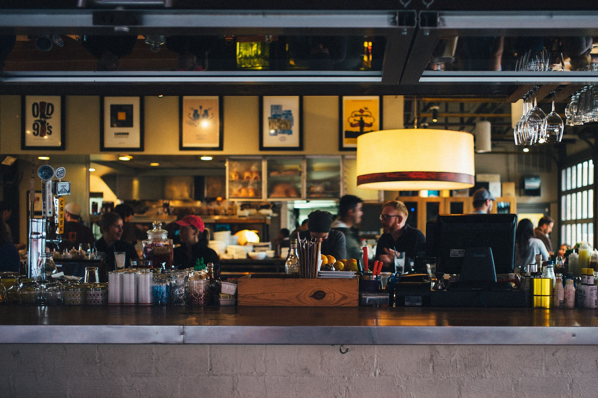
Bar & Grill · Hudson, New York
Rotating craft taps, grass-fed Kinderhook Farm burgers and a warm seat at the bar, just off Warren Street.
Open Thu–Mon from noon
The Beer
An ever-changing list of craft drafts, with usually something local pouring. Here’s what the board said on Sept 27, 2026:
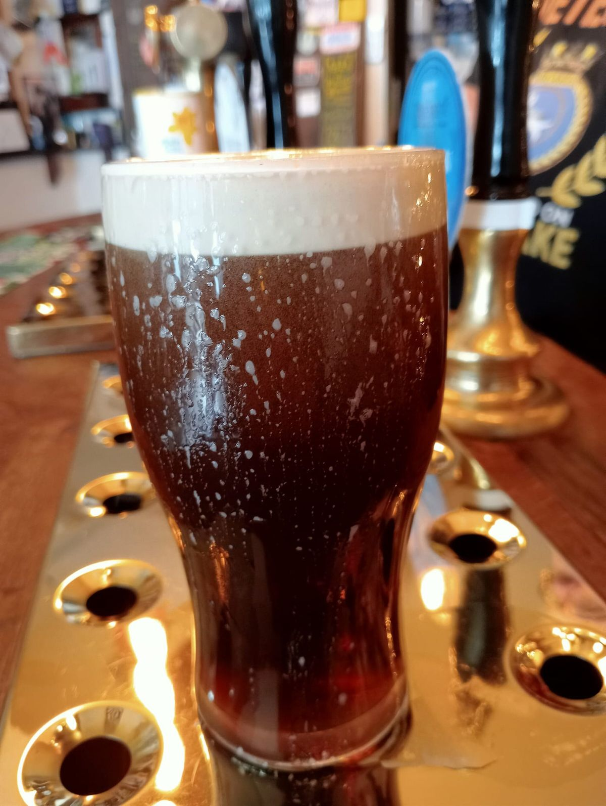
cheers ~ the Governor
A night at the Governor’s
Around the corner from Warren Street, through the door on 7th. Dark wood and exposed brick, the original bar-back, and a mural-sized photograph of 1800s Warren Street on the back wall.
The State Grill burger: Kinderhook Farm beef, cheddar, frizzled onions and horseradish-onion mayo, served with au jus. Or roll the dice on Popper Roulette: five jalapeños, one habanero.
See the burgers → III.
III.
Three flat screens, each tuned to a different sport, so expect some cheering (and some cursing). Pull up a stool, pick something off the board and settle in.
What’s on tap →Friday and Saturday we pour until 2am. Grab one more round, or take a few cans home with you.
This week’s hours →Since before 1883
Few bars in the Hudson Valley have this much history behind the taps.
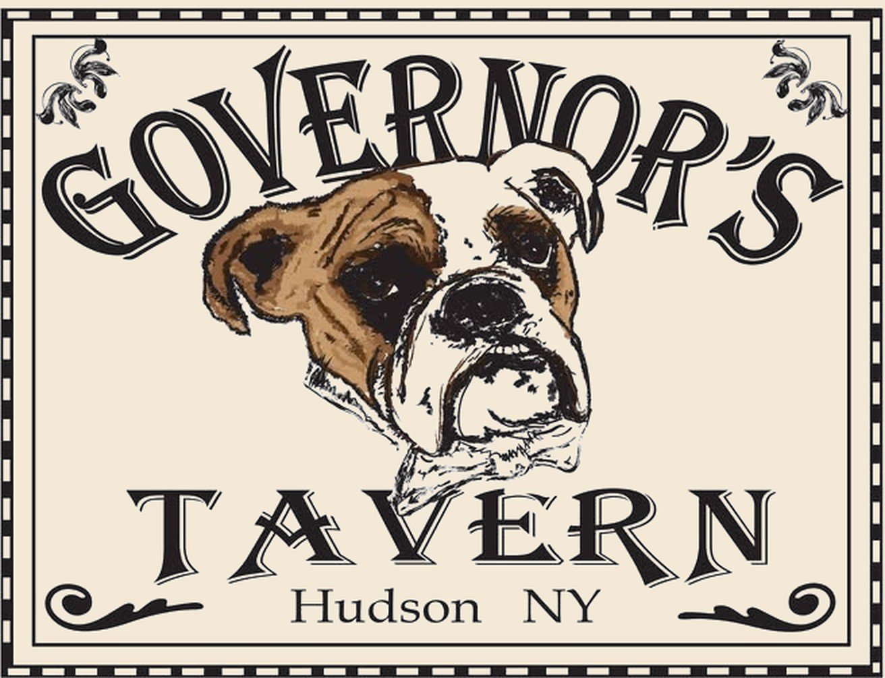
The name? It comes from the owners’ first bulldog, Governor Russell Smalls.
An affordable boarding house and tavern for farmers coming into Hudson for provisions. Horses and coaches were kept in the barn out back.
It kept running in some capacity through Prohibition, and for years it opened at 8am for shift workers.
Filmmakers looking for a classic bar shot scenes here, including Ironweed, Cake Eaters and Paul Newman’s Nobody’s Fool (1994). For that film the bar became “The Iron Horse,” and the name stuck.
After longtime owner Frank Martino passed in 2013, the building sat empty. New owners brought historic photos to the Historic Preservation Commission and restored it top to bottom.
Renee Ortega and Brian Dykeman kept the original bar-back and repurposed the original bar, which they found inside the walls. The neighborhood pub carries on.
Hours
Open every day from noon.
Three screens, three different sports.
New beers hit the board all the time. Check BeerMenus before you come.
Outdoor seating, and pets are welcome.
Want the place for an occasion? Give us a call.
Hours can change for holidays and private events. Check our Facebook or call before you head over.
From our Facebook
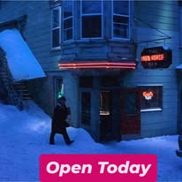
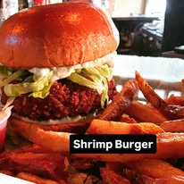
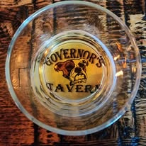
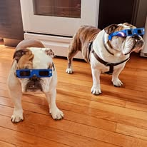
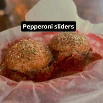
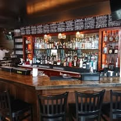
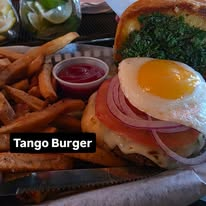
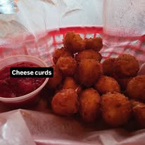
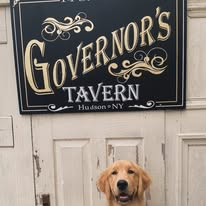
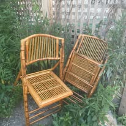
Visit
Just off Warren Street, Hudson’s main drag.